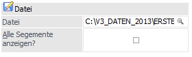
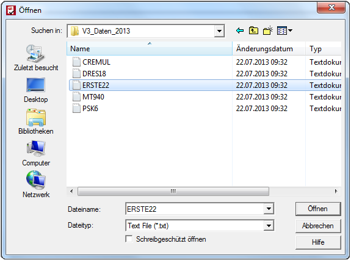
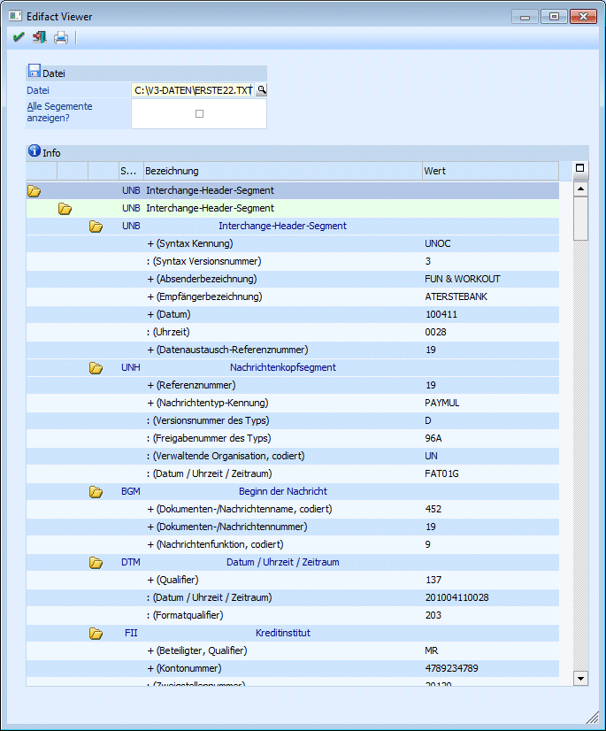
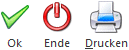

Mit dem Programm-Modul Edifact Viewer können Sie Dateien, die im V3-Format (Edifact) vorliegen, öffnen und sich die Datenstruktur anschauen.
Ø Datei

Durch Anklicken auf das Lupen-Symbol oder durch Drücken der F9-Taste können Sie die entsprechende Datei auswählen und öffnen.

Die Anzeige im Edifact Viewer kann komprimiert oder im Detail erfolgen. Durch einen Doppelklick auf das Symbol öffnet sich die Anzeige in Form einer Baumstruktur. D.h. die weiteren Ebenen (die Anzeige ist in 3 Ebenen unterteilt) werden durch Anklicken der Ordner-Symbole angezeigt.

Ø Satzart
Anzeige der Edifact Kurzbegriffe.
Ø Alle Segmente anzeigen?
ü Aktiv
Ist die Checkbox aktiv,
werden alle in der Datei vorhandenen Satzarten (Segmente) angezeigt.
ü Inaktiv
Ist die Checkbox
inaktiv, werden nur die im Programm dokumentierten Segmente angezeigt.
Buttons

Ø OK
Die ausgewählte Datei wird geladen.
Ø Ende
Mit dem Ende-Button wird der Edifact Viewer geschlossen.
Ø Drucken
Sie können durch Anklicken des Drucken-Buttons den Inhalt der Tabelle ausdrucken.